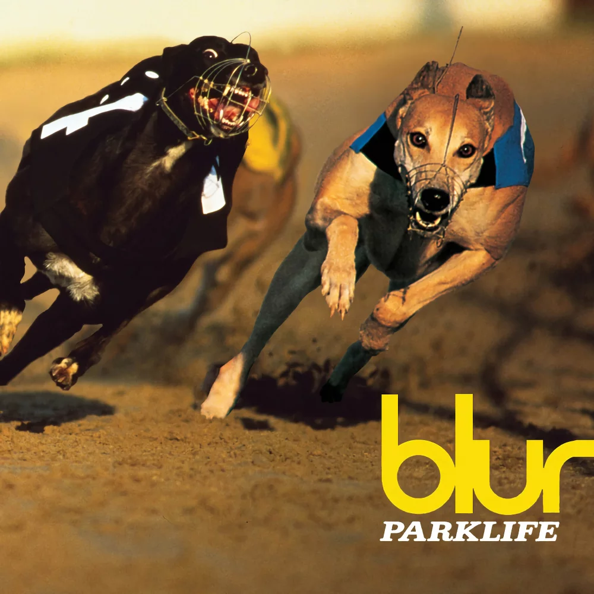
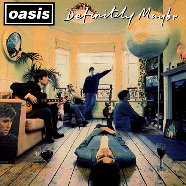
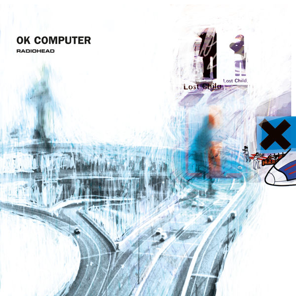
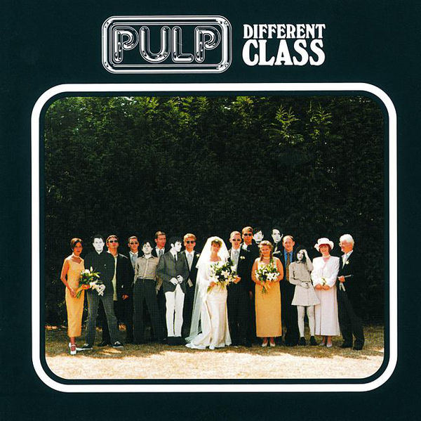

PocketRay
@liamfan-n1
коллекционер бритпоп архивов, blur/oasis/radiohead,
старые nme scans, live bootlegs и концертные записи 90-х.
28
статьи
412
подписчики
95
подписки
67
избранное
любимые
альбомы

Parklife
Blur • 1994

Definitely Maybe
Oasis • 1994

OK Computer
Radiohead • 1997

Different Class
Pulp • 1995
недавняя
активность
24 АВГ
Добавлена статья:
Совместное выступление Ноэла Галлахера и Джонни Марра
18 АВГ
Новый пост:
Дэймон Албарн — фотосессия для NME в 1998 году
12 АВГ
Добавлено в избранное:
Blur — Parklife